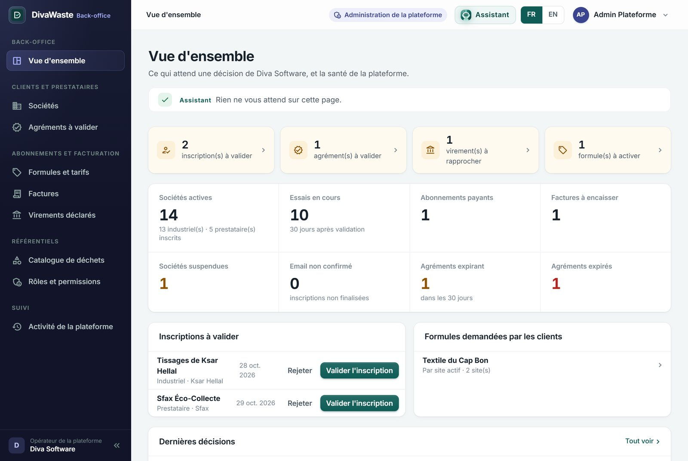
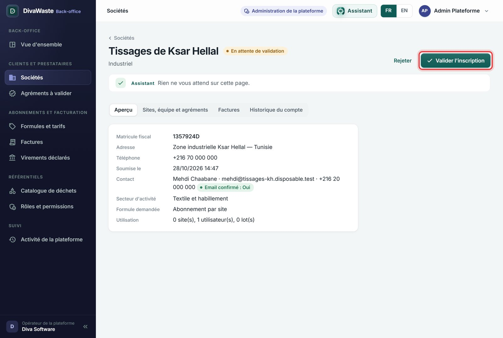
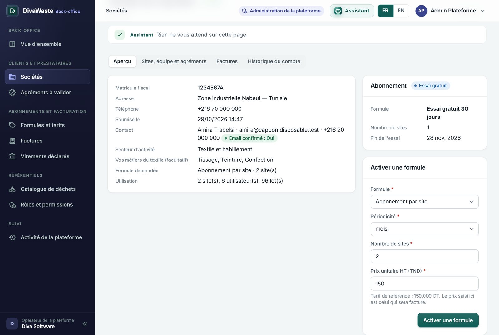
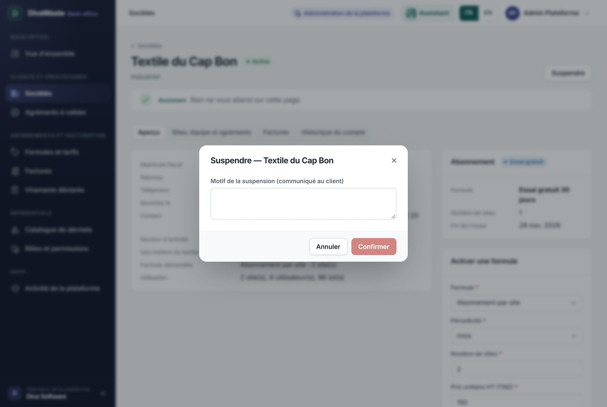
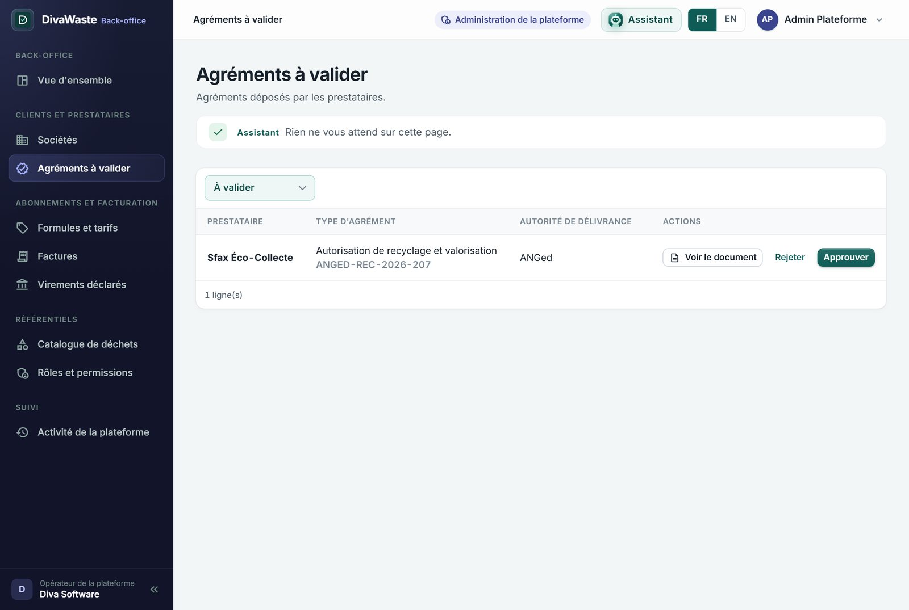
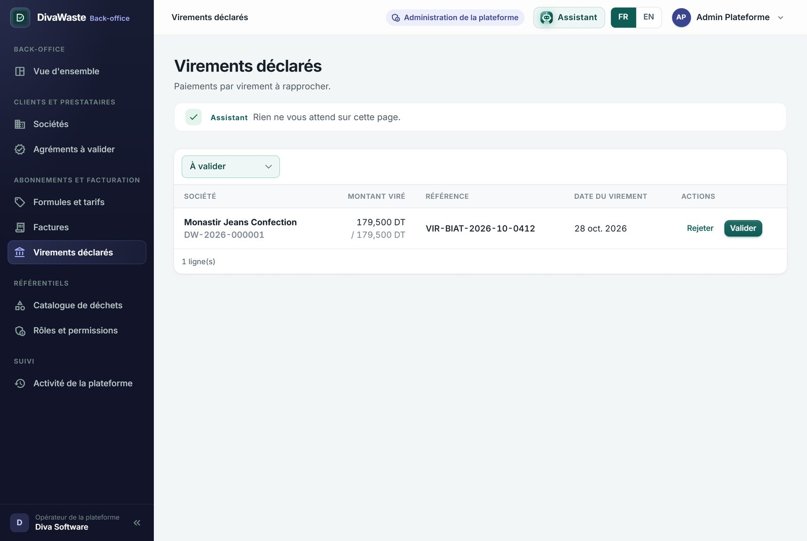
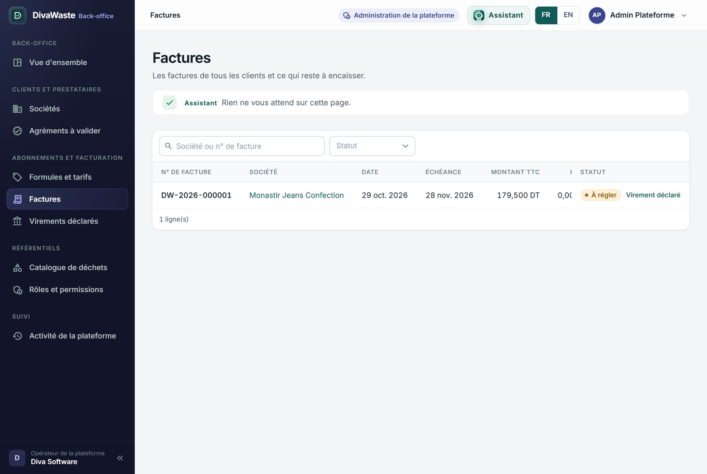
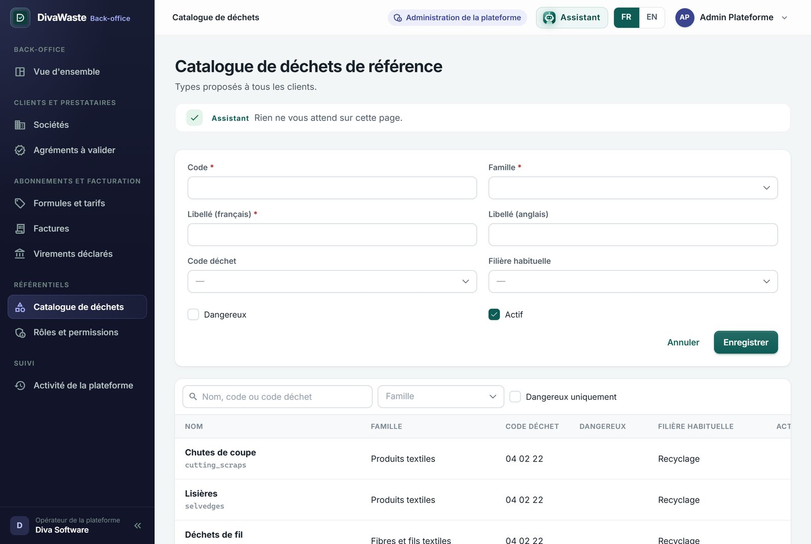
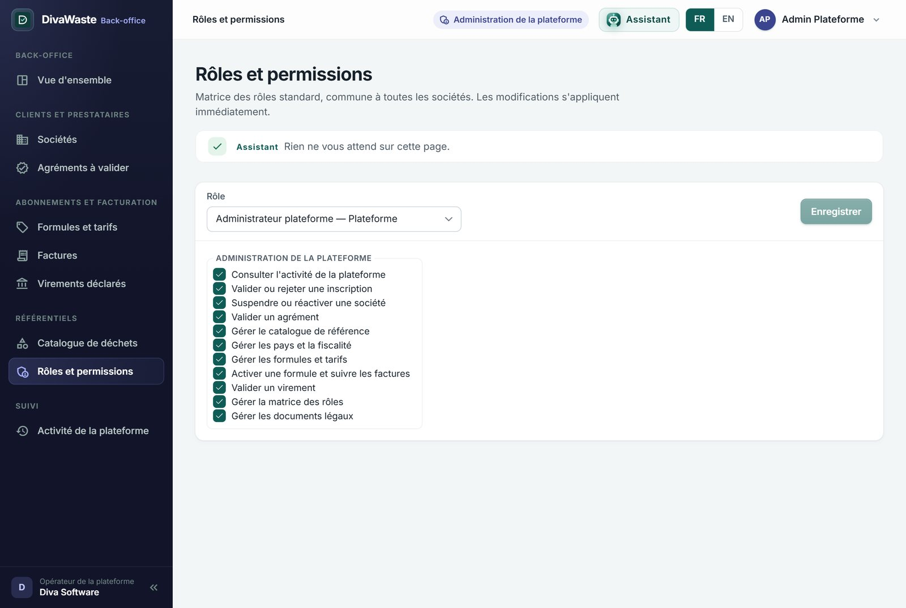

| Rôle | Ce qu'il peut faire |
|---|---|
| Administrateur plateforme | Tout le back-office : inscriptions, suspensions, agréments, virements, formules, factures, catalogue, pays et fiscalité, matrice des rôles, documents légaux. |
| Support plateforme | Consulter l'Activité de la plateforme pour aider un client, sans rien décider. |

| Tuile | Ce qu'elle veut dire, et où elle mène |
|---|---|
| Inscription(s) à valider | Sociétés inscrites, email confirmé, qui attendent votre décision › Sociétés (filtre « En attente de validation »). |
| Agrément(s) à valider | Agréments déposés par des prestataires › Agréments à valider. |
| Virement(s) à rapprocher | Virements déclarés par des clients › Virements déclarés. |
| Formule(s) à activer | Clients qui ont demandé une formule depuis leur page Abonnement › Sociétés (filtre « Formule demandée »). |
Dessous, la santé de la plateforme : sociétés actives (industriels et prestataires), essais en cours, abonnements payants, factures à encaisser, sociétés suspendues, emails non confirmés (inscriptions non finalisées), agréments expirant dans les 30 jours et expirés. Puis les listes « Inscriptions à valider » (avec Valider l'inscription et Rejeter directement), « Formules demandées » et « Dernières décisions ».




Un client déclare son virement sur sa facture (Guide 9, F2). Virements déclarés : la société, la facture, le montant viré sur le montant dû, la référence bancaire et la date. Retrouvez-le sur le relevé bancaire, puis Valider › Confirmer : la facture est réglée. Pas sur le relevé ? Rejeter, avec le motif.


Factures : toutes les factures de tous les clients, leur échéance, ce qui est réglé, et « Virement déclaré » quand un virement attend.
Formules et tarifs : l'essai gratuit (durée), l'abonnement par site, par volume ; leurs tarifs mensuel et annuel HT, le nombre de clients, et leur état : Actif (activable pour un client) et Publique (proposée à l'inscription). Modifier : nom, description, durée de l'essai, ces deux réglages.
Les types proposés à tous les clients, qu'ils activent dans Paramètres › Types de déchets › Catalogue de référence (Guide 4, R1). Nouveau type de référence : code, famille, libellés français et anglais, code déchet réglementaire, filière habituelle, dangereux, actif.


La matrice des rôles standard, commune à toutes les sociétés : choisissez un rôle, cochez ou décochez ses permissions, Enregistrer. Les modifications s'appliquent immédiatement à tous les utilisateurs de ce rôle, dans toutes les sociétés : à faire avec prudence. Les rôles propres à une société, eux, se règlent dans la société (Guide 7, D).
Qui a décidé quoi : inscriptions validées ou rejetées, suspensions, agréments, formules, paiements, référentiels ; filtrable par objet et par dates. C'est l'écran du Support plateforme pour répondre à un client (« pourquoi mon compte est-il suspendu ? »).
| ☐ | Les tuiles de la vue d'ensemble comptent juste et mènent à la bonne liste. |
| ☐ | Je valide une inscription : la société passe Active, son essai commence, son administrateur peut se connecter. |
| ☐ | Je rejette une inscription avec un motif ; le demandeur le voit. |
| ☐ | J'ouvre le document d'un agrément et je l'approuve ; le prestataire devient choisissable. |
| ☐ | Je valide un virement déclaré ; la facture passe à réglée. |
| ☐ | J'active une formule avec un prix ; il apparaît sur l'abonnement du client. |
| ☐ | Je suspends une société avec un motif, puis je la réactive. |
| ☐ | Je modifie la durée de l'essai gratuit ; les nouvelles inscriptions la reçoivent. |
| ☐ | Je crée un type de référence ; un client peut l'activer. |
| ☐ | Chaque décision apparaît dans l'Activité de la plateforme et l'historique de la société. |
| ☐ | L'assistant de la vue d'ensemble dit ce qui attend (inscriptions, virements…). |